О проекте
Пожалуй, один из самых любимых проектов.
В июле 2023 года к нам обратились коллеги из строительной компании DOGMA. Изначальный запрос был продвижение Дзена.
Дзен в это момент все еще проходил финальную стадию переезда к vk. Поэтому ни о каком рекламном кабинете или адекватной аналитике речи и не было.
Банально кабинет Дзена не распознавал рекламный трафик.
С помощью костылей мы пробовали отследить хоть какую-то эффективность. И даже пару месяцев застали инструмент продвижения Дзена через vk ads. Но это уже совсем другая история.
Перейдем к интересному.
В декабре 2023 года мы переехали на продвижение telegram-канала с помощью Я.Директа и vk сообщества через vk ads.
В первый месяц для отслеживания эффективности рекламы мы создали двухблочную страничку на tilda, где постарались накинуть максимум ценности и пользы для потребителя при переходе в тг.
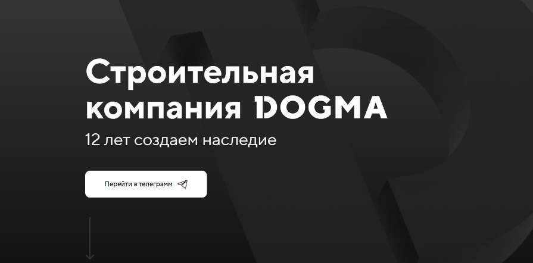
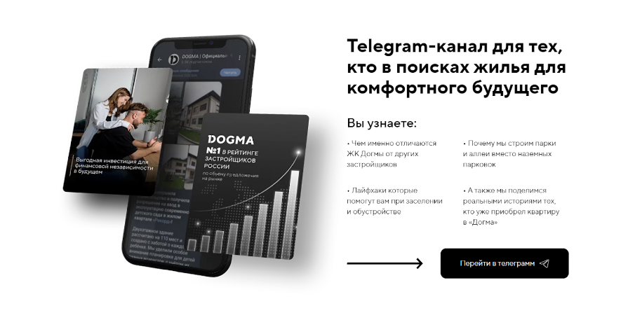
Однако такой формат подачи имел меньшую конверсию по отношению к тому, что мы внедрили в следующем месяце. Также у нас были данные только по переходам, а не подпискам. Что по сути могло резать нашу конверсию еще в половину.
Сам директ только начинал обучаться. Мы создали 6 рекламных кампаний с разными настройками таргетов и методов оплаты, чтобы найти наиболее эффективную: ком. запросы, ипотека, конкуренты, авто, интересы. Тестировали Мастер и РСЯ как за клики, так и за конверсию.
По креативам, что в вк, что в Яндексе у нас были:
Истории покупок на расстоянии 5000 км
Интересные условия по ипотеке
Истории жизни в МР DOGMA
Предлагаю сделать объективное сравнение кампаний далее, чтобы не растягивать удовольствие.
Сейчас зафиксируем результат за первый месяц.
Итак:
Тестовый бюджет для каждой площадки: 25 000 р.
С Яндекса у нас 41 переход в тг по цене 426р.
ВК 50 подписчиков по цене 415 р.
Лучший креатив в вк история про покупку за 5000 км.
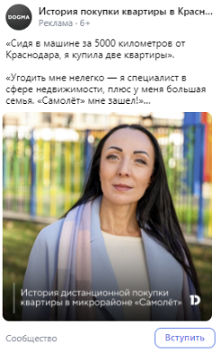
Что могу сказать, не стесняйтесь писать интересные истории. Ведь качественное качество не всегда дает нужный результат. А если добавить чутка души и реальных событий, то получается совсем другая история.
Январь — месяц, когда нужно начинать жить лучше, чем прошлом году. Но а мы придерживаемся сложившихся традиций.
У нас появился замечательный инструмент для отслеживания именно подписок в телеграмм канале с Яндекс.Директа — Откуда Подписки Бот.
Мы даже оставим ссылку на сервис, где все подробно описано по условиям использования https://tgtrack.ru/.
Тут же покажем, что это из себя представляет. Сам бот ежедневно присылает статистику в таком виде, где видно кто подписался и отписался и с каких источников. И даже видно товарищей пришедших с рекламы Я.Директ
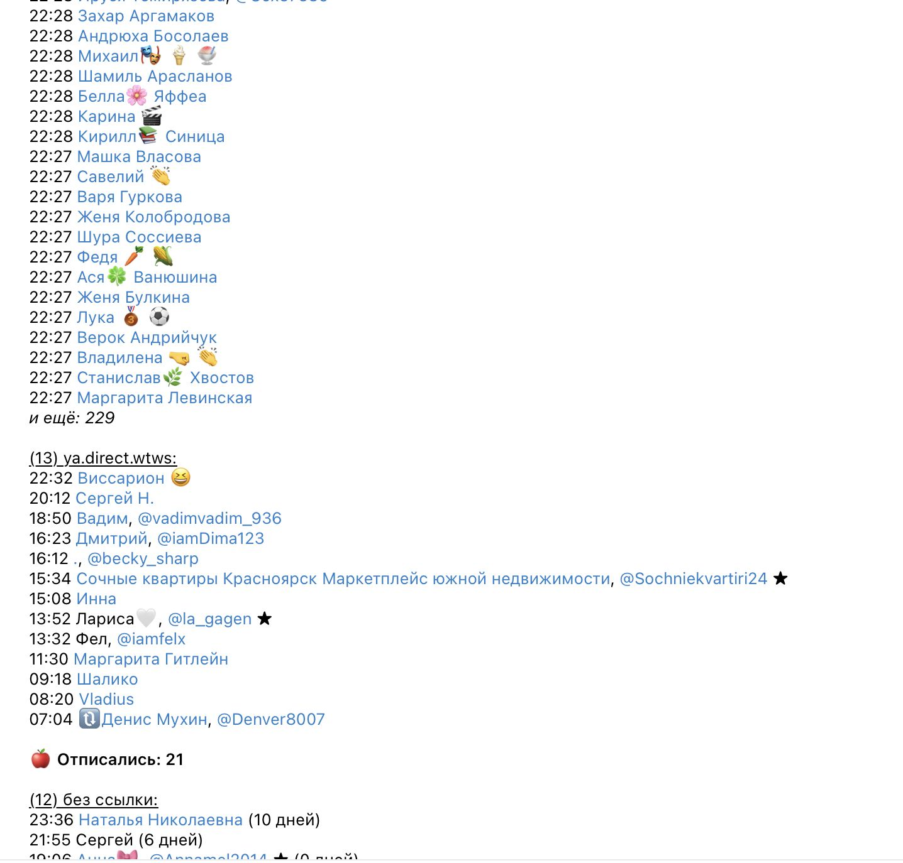
А еще у вас есть вот такая гугл таблица с кучей дашбордов, где видно каждое движение ваших подписчиков. Очень полезная штука для анализа.
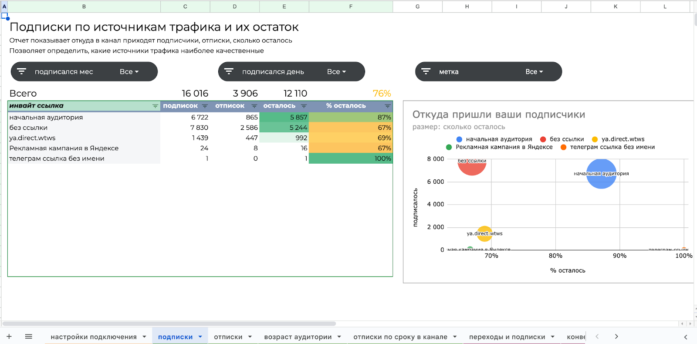
Вы можете направлять трафик как на канал в целом, там и на конкретный пост. Да, у вас также есть прокладки в виде небольших страничек. Но теперь все ваши подписки на канале отображаются в Яндекс Метрике и передаются прямо в Директ для оптимизации стратегии «оплата за конверсию». В нашем случае мы настроили наши РК на оплату за подписчиков.
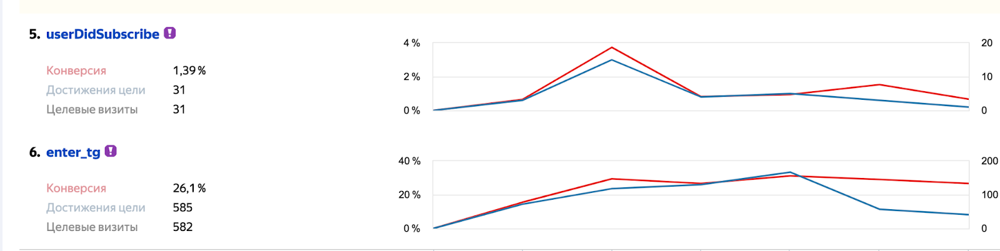
Также изменился формат самих посадок. В этом месяце они максимально мимикрировали по визуалу под сами посты в соц. сетях
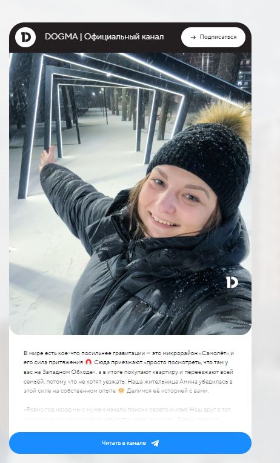
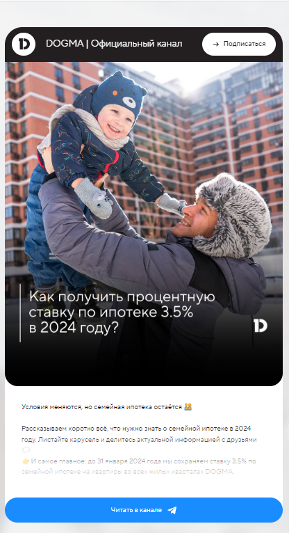
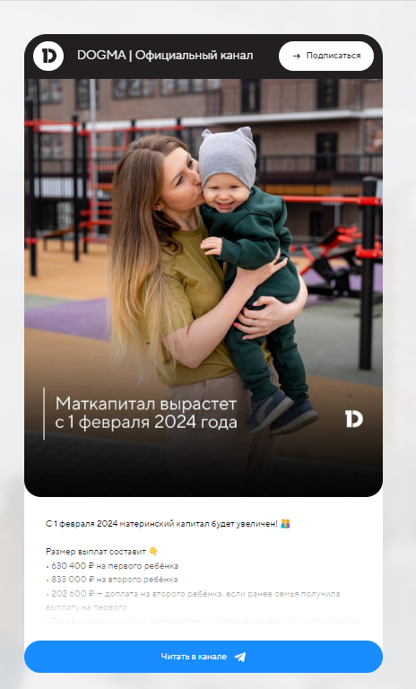
Да, Я.Директ у нас снова улетел на обучение, но теперь он ориентируется конкретно на пользователей, который с большей долей вероятности подпишутся на канал.
Также мы обновили часть креативов на «зимний камуфляж», и добавили в тестовом формате Реутов помимо Краснодара и Краснодарского края.
Что с цифрами?
Директ ушел думать. Мы получили 66 подписчиков по 1111р. Да, дорого. Но эта жертва того стоила, это вы увидите в последующие месяца, когда стоимость подписки с Директа уменьшалась вплоть до 130 р., а прирост подписчиков составлял только с Директа 430 человек.
А вот наш полуавтоматический vk ads обороты уже набрал.
Стоимость подписчика упала на 53%, что составило 191 р. вместо 415 р. в декабре.
А количество выросло на 660%. С 50 до 380 в месяц.
Такие результаты по вк мы получили по 3 причинам:
vk получил больше охватов и ему легче стало обучаться
Увеличился рекламный бюджет больше чем в 2 раза
Лучше попадали креативами (на некоторых креативах стоимость подписчика опускалась до 99 р.)
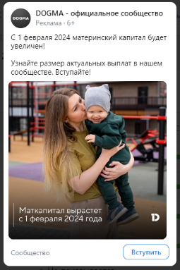
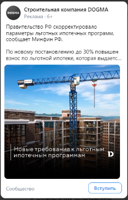
Сейчас добавлю коротко про креативы и таргеты в целом, далее понаблюдаем за динамикой цены и количества подписчиков от месяца к месяцу. Посмотрим до каких рекордным показателей получилось разогнать обе площадки.
В основном подача в креативах оставалось примерно одной и той же. Менялись картинки, истории, наполнение. Также далее используем «истории покупок», «ипотека», «мат. капитал», «обзор ЖК»
Из нового нам дали зеленый свет на более широкие темы про «Рост Краснодара» и «Достопримечательности Краснодарского края», т.к. начали таргетироваться на пользователей, которые хотели бы переехать к нам.
Кстати, такие широкие темы и давали нам рекордно низкие стоимости подписчиков.
Лучшей рекламной кампаний из месяца в месяц в Яндекс. Директе является РК типа РСЯ с оплатой за клики по брендовым ключам, конкурентам, запросам ЖК по гео край.
А теперь к динамике по месяцам.
Не считая месяцев с тестами стоимость подписчика в вк удерживаем в пределах 120-180. А в такие месяца как май и июль стоимость снижалась до 114 и 101 р. за подписчика.
Объем подписчиков в основном свыше 300-380 в месяц.
Директ начиная к маю вышел в среднем с 300-400 рублей за подписчика на 130-220р. и продолжает держать эту планку.
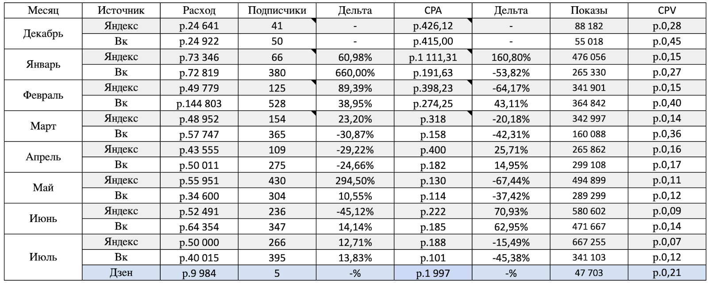
В июле также вернулись к тестам Дзена через vk ads. На момент написания статьи рекламная кампания только начала обучаться. И имеет вот такие результаты:
Прочтения: 275
CPA прочтение: 36р.
Подписка:
CPA подписка: 1996р.
Какой вывод можно сделать из этого кейса:
Простые инструменты аналитики могут значительно сэкономить вам бюджет.
Тесты разных креативов на разные аудитории помогут найти наименьшую стоимость подписчика
Всегда нужно закладывать 1-2 месяца для оптимизации инструментов что в автоматическом, что в ручном режиме стратегий.